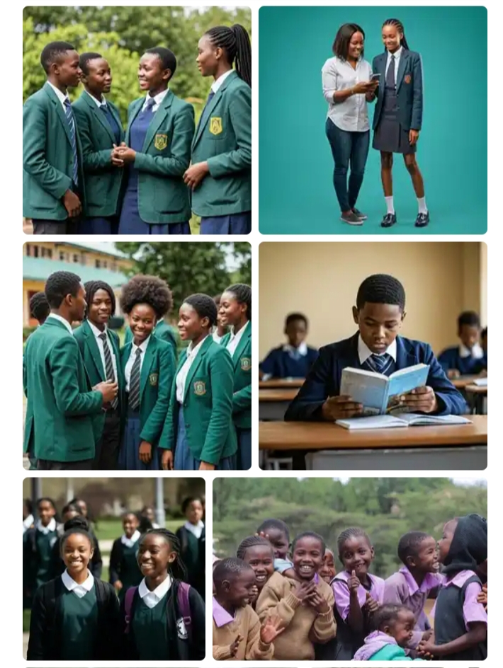

Oz Stitches – Professional School Uniforms
Quality school uniforms for primary, junior, and secondary schools

About Oz Stitches
I am a professional fashion designer and tailor specializing in school uniforms.
I focus on clean finishing, strong stitching, and uniforms that meet school standards.
I handle both small and bulk orders with care and consistency.
Services Offered
- Primary School Uniforms
- Junior & Secondary School Uniforms
- Sports & P.E Uniforms
- Teachers & Staff Uniforms
- Custom Designs Based on School Requirements
Why Choose Me
High-quality materials
Neat and durable finishing
Affordable pricing
Timely delivery
Reliable bulk production
Let’s Discuss Your School’s Uniform Needs
Contact me today to plan your next uniform production.
Chat on WhatsApp